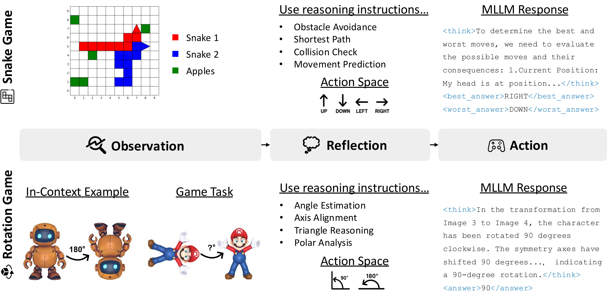

Game Pipeline
- We propose post-training MLLMs via RL by playing visual games. We demonstrate this with two games: the classic arcade game Snake, and Rotation, a self-designed task to investigate spatial reasoning.
- In each game, the model receives multimodal inputs and follows reasoning instructions, e.g., path planning in Snake, angle estimation in Rotation.
- It reflects to choose an action, outputs its chain-of-thought and decision, e.g., best/worst move or predicted angle, and receives a reward based on performance.
- Through game playing, the model obtains reasoning abilities that transfer to downstream multimodal tasks.
